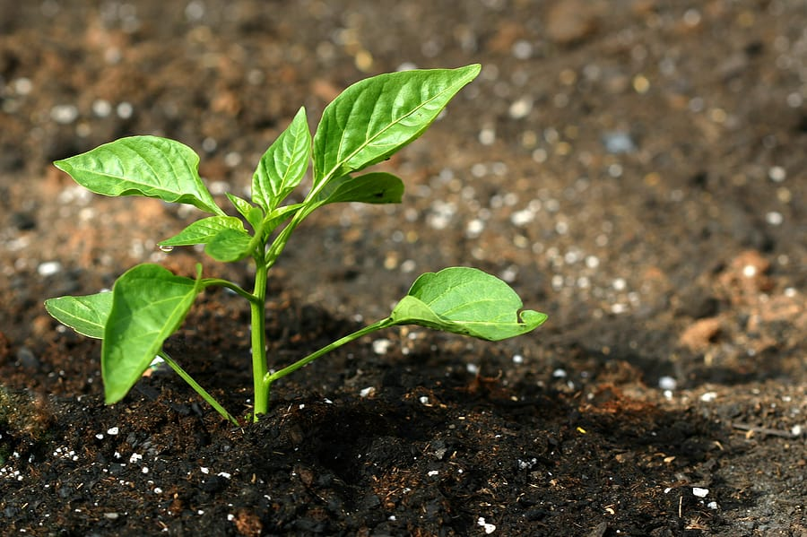

Basil!
Details: Basil (Ocimum spp.) is a member of the mint family. There are several species and numerous interspecific hybrids. The most common culinary type is sweet basil, O. basilicum, which also has purple and lemon-scented cultivars. Specialty types include Thai (O. tenuiflorum), lemon (O. americanum X O. citridorum) and small-leaved bush types of various species and crosses. Basil seed is not always true to type. Try to obtain high-quality seed that is uniform with a high germination percentage.
Planting Conditions: Basil grows well in a warm, well-drained soil in a wide pH range, although the typical vegetable crop range of pH 6.0-6.8 is ideal. In New England, basil is most commonly transplanted, but because it is highly sensitive to cold (low 40s), it should not be set out until after danger of frost. Transplants should be 4 to 6 weeks old. Basil is often spaced at 6"-12" between plants in double rows. Tighter spacing will promote longer shoots for bunching.
Harvesting: Basil can be lightly harvested by pruning as early as 6 weeks after planting, with regular harvests starting a few weeks after that. Harvests should take place in the morning after the dew has left the plants. Basil grown for culinary use should be harvested before flowering. Flavor will be adversely affected if allowed to flower. If grown for essential oil production, it should be harvested at full bloom.